Analysis of TCGA RPPA LIHC samples
Jovan Tanevski
2021-08-03
Last updated: 2021-08-03
Checks: 7 0
Knit directory: Multispectral HCC/
This reproducible R Markdown analysis was created with workflowr (version 1.6.2). The Checks tab describes the reproducibility checks that were applied when the results were created. The Past versions tab lists the development history.
Great! Since the R Markdown file has been committed to the Git repository, you know the exact version of the code that produced these results.
Great job! The global environment was empty. Objects defined in the global environment can affect the analysis in your R Markdown file in unknown ways. For reproduciblity it’s best to always run the code in an empty environment.
The command set.seed(20210728) was run prior to running the code in the R Markdown file. Setting a seed ensures that any results that rely on randomness, e.g. subsampling or permutations, are reproducible.
Great job! Recording the operating system, R version, and package versions is critical for reproducibility.
Nice! There were no cached chunks for this analysis, so you can be confident that you successfully produced the results during this run.
Great job! Using relative paths to the files within your workflowr project makes it easier to run your code on other machines.
Great! You are using Git for version control. Tracking code development and connecting the code version to the results is critical for reproducibility.
The results in this page were generated with repository version 421cbc4. See the Past versions tab to see a history of the changes made to the R Markdown and HTML files.
Note that you need to be careful to ensure that all relevant files for the analysis have been committed to Git prior to generating the results (you can use wflow_publish or wflow_git_commit). workflowr only checks the R Markdown file, but you know if there are other scripts or data files that it depends on. Below is the status of the Git repository when the results were generated:
Ignored files:
Ignored: .DS_Store
Ignored: .Rhistory
Ignored: .Rproj.user/
Ignored: NMF_4439195520b/
Ignored: analysis/.DS_Store
Ignored: code/
Ignored: data/
Ignored: old/
Ignored: output/
Note that any generated files, e.g. HTML, png, CSS, etc., are not included in this status report because it is ok for generated content to have uncommitted changes.
These are the previous versions of the repository in which changes were made to the R Markdown (analysis/tcga.Rmd) and HTML (docs/tcga.html) files. If you’ve configured a remote Git repository (see ?wflow_git_remote), click on the hyperlinks in the table below to view the files as they were in that past version.
| File | Version | Author | Date | Message |
|---|---|---|---|---|
| html | f791e00 | Jovan Tanevski | 2021-08-03 | Build site. |
| Rmd | e464694 | Jovan Tanevski | 2021-08-03 | fix seed, stabilize nmf |
| html | 51e2651 | Jovan Tanevski | 2021-08-03 | Build site. |
| Rmd | 7d62e48 | Jovan Tanevski | 2021-08-03 | hclust and leiden on quantile normalized data |
| html | 55fb7fc | Jovan Tanevski | 2021-08-02 | Build site. |
| Rmd | a152862 | Jovan Tanevski | 2021-08-02 | add NMF based analysis |
| html | c25dcca | Jovan Tanevski | 2021-08-02 | Build site. |
| Rmd | 21cf743 | Jovan Tanevski | 2021-08-02 | rank normalization, leiden analysis, diff exp |
| html | a386eaa | Jovan Tanevski | 2021-07-28 | Build site. |
| Rmd | 9ab4acc | Jovan Tanevski | 2021-07-28 | Build site. |
| Rmd | bd05dbf | Jovan Tanevski | 2021-07-28 | add expression profiles |
| html | e45bf1d | Jovan Tanevski | 2021-07-28 | Build site. |
| Rmd | dcab1bf | Jovan Tanevski | 2021-07-28 | set figure output to svg |
| html | 33e71a0 | Jovan Tanevski | 2021-07-28 | Build site. |
| Rmd | bb998b8 | Jovan Tanevski | 2021-07-28 | hclust with factoextra |
| html | 1cb80af | Jovan Tanevski | 2021-07-28 | Build site. |
| Rmd | d0b6e0f | Jovan Tanevski | 2021-07-28 | add pca to tcga analysis |
| html | d73f586 | Jovan Tanevski | 2021-07-28 | Build site. |
| Rmd | c4324f5 | Jovan Tanevski | 2021-07-28 | add umap |
| html | 0bfae68 | Jovan Tanevski | 2021-07-28 | Build site. |
| Rmd | 82e3712 | Jovan Tanevski | 2021-07-28 | add basic hclust |
Setup
Load required libraries.
library(tidyverse)
library(skimr)
library(uwot)
library(factoextra)
library(cowplot)
library(FNN)
library(igraph)
library(leiden)
library(limma)
library(NMF)Read filtered TCGA RRPA data and display summary statistics.
tcga.raw <- read_csv("data/TCGA-RPPA-LIHC_selected.csv", col_types = cols()) %>%
select(-TumorType) %>%
column_to_rownames("SampleID")
skim(tcga.raw)| Name | tcga.raw |
| Number of rows | 184 |
| Number of columns | 12 |
| _______________________ | |
| Column type frequency: | |
| numeric | 12 |
| ________________________ | |
| Group variables | None |
Variable type: numeric
| skim_variable | n_missing | complete_rate | mean | sd | p0 | p25 | p50 | p75 | p100 | hist |
|---|---|---|---|---|---|---|---|---|---|---|
| P53 | 0 | 1 | -1.13 | 0.46 | -2.54 | -1.40 | -0.96 | -0.76 | -0.51 | ▁▂▂▅▇ |
| AKT_pS473 | 0 | 1 | -0.63 | 0.71 | -2.76 | -1.02 | -0.41 | -0.15 | 0.96 | ▁▂▃▇▁ |
| AKT_pT308 | 0 | 1 | 0.07 | 0.42 | -1.16 | -0.07 | 0.09 | 0.22 | 1.72 | ▁▃▇▁▁ |
| BETACATENIN | 0 | 1 | 1.50 | 0.72 | -1.30 | 1.08 | 1.51 | 1.87 | 3.70 | ▁▁▇▅▁ |
| JNK_pT183Y185 | 0 | 1 | -0.21 | 0.29 | -1.14 | -0.36 | -0.17 | -0.04 | 0.48 | ▁▂▇▇▂ |
| MEK1_pS217S221 | 0 | 1 | -0.17 | 0.36 | -0.82 | -0.35 | -0.23 | -0.10 | 2.58 | ▇▃▁▁▁ |
| P38_pT180Y182 | 0 | 1 | 0.49 | 0.57 | -1.45 | 0.31 | 0.50 | 0.72 | 2.95 | ▁▂▇▁▁ |
| P70S6K_pT389 | 0 | 1 | -1.21 | 0.75 | -3.22 | -1.58 | -0.95 | -0.65 | 1.09 | ▂▃▇▃▁ |
| PDK1_pS241 | 0 | 1 | 0.40 | 0.31 | -0.56 | 0.23 | 0.37 | 0.55 | 1.62 | ▁▇▇▂▁ |
| S6_pS235S236 | 0 | 1 | -0.72 | 0.75 | -3.53 | -1.06 | -0.67 | -0.36 | 1.12 | ▁▁▅▇▂ |
| YAP_pS127 | 0 | 1 | 2.21 | 0.61 | 0.68 | 1.78 | 2.10 | 2.54 | 4.05 | ▁▇▇▂▁ |
| TRANSGLUTAMINASE | 0 | 1 | -0.42 | 0.56 | -1.24 | -0.83 | -0.59 | -0.20 | 2.72 | ▇▃▁▁▁ |
Quantile normalization and rank normalization for NMF as suggested in https://gdac.broadinstitute.org/runs/analyses__2016_01_28/reports/cancer/LIHC/RPPA_Clustering_CNMF/nozzle.html
sorted.means <- apply(tcga.raw, 1, sort) %>% colMeans()
names(sorted.means) <- rank(sorted.means)
tcga.norm <- mutate_all(tcga.raw, ~ sorted.means[as.character(rank(.))])
skim(tcga.norm)| Name | tcga.norm |
| Number of rows | 184 |
| Number of columns | 12 |
| _______________________ | |
| Column type frequency: | |
| numeric | 12 |
| ________________________ | |
| Group variables | None |
Variable type: numeric
| skim_variable | n_missing | complete_rate | mean | sd | p0 | p25 | p50 | p75 | p100 | hist |
|---|---|---|---|---|---|---|---|---|---|---|
| P53 | 0 | 1 | 0.01 | 0.2 | -0.68 | -0.1 | 0.06 | 0.13 | 0.63 | ▁▃▇▆▁ |
| AKT_pS473 | 0 | 1 | 0.01 | 0.2 | -0.68 | -0.1 | 0.06 | 0.13 | 0.63 | ▁▃▇▆▁ |
| AKT_pT308 | 0 | 1 | 0.01 | 0.2 | -0.68 | -0.1 | 0.06 | 0.13 | 0.63 | ▁▃▇▆▁ |
| BETACATENIN | 0 | 1 | 0.01 | 0.2 | -0.68 | -0.1 | 0.06 | 0.13 | 0.63 | ▁▃▇▆▁ |
| JNK_pT183Y185 | 0 | 1 | 0.01 | 0.2 | -0.68 | -0.1 | 0.06 | 0.13 | 0.63 | ▁▃▇▆▁ |
| MEK1_pS217S221 | 0 | 1 | 0.01 | 0.2 | -0.68 | -0.1 | 0.06 | 0.13 | 0.63 | ▁▃▇▆▁ |
| P38_pT180Y182 | 0 | 1 | 0.01 | 0.2 | -0.68 | -0.1 | 0.06 | 0.13 | 0.63 | ▁▃▇▆▁ |
| P70S6K_pT389 | 0 | 1 | 0.01 | 0.2 | -0.68 | -0.1 | 0.06 | 0.13 | 0.63 | ▁▃▇▆▁ |
| PDK1_pS241 | 0 | 1 | 0.01 | 0.2 | -0.68 | -0.1 | 0.06 | 0.13 | 0.63 | ▁▃▇▆▁ |
| S6_pS235S236 | 0 | 1 | 0.01 | 0.2 | -0.68 | -0.1 | 0.06 | 0.13 | 0.63 | ▁▃▇▆▁ |
| YAP_pS127 | 0 | 1 | 0.01 | 0.2 | -0.68 | -0.1 | 0.06 | 0.13 | 0.63 | ▁▃▇▆▁ |
| TRANSGLUTAMINASE | 0 | 1 | 0.01 | 0.2 | -0.68 | -0.1 | 0.06 | 0.13 | 0.63 | ▁▃▇▆▁ |
tcga.rank <- mutate_all(tcga.raw, rank)Dimensionality reduction
tcga.pca <- prcomp(tcga.norm)
summary(tcga.pca)Importance of components:
PC1 PC2 PC3 PC4 PC5 PC6 PC7
Standard deviation 0.4038 0.2522 0.2157 0.19762 0.19025 0.16939 0.15692
Proportion of Variance 0.3550 0.1385 0.1013 0.08504 0.07882 0.06248 0.05362
Cumulative Proportion 0.3550 0.4935 0.5948 0.67980 0.75862 0.82110 0.87472
PC8 PC9 PC10 PC11 PC12
Standard deviation 0.13833 0.13333 0.09990 0.08501 0.05844
Proportion of Variance 0.04166 0.03871 0.02173 0.01574 0.00744
Cumulative Proportion 0.91638 0.95509 0.97683 0.99256 1.00000set.seed(42)
tcga.umap <- umap(tcga.norm, n_neighbors = 10, n_epochs = 1000)Hierarchical clustering
Perform hierarchical clustering of the data and plot the resulting dendrogram
tcga.hclust <- eclust(tcga.norm, "hclust", k = 6)Warning: `guides(<scale> = FALSE)` is deprecated. Please use `guides(<scale> =
"none")` instead.fviz_dend(tcga.hclust, rect = TRUE)Warning: `guides(<scale> = FALSE)` is deprecated. Please use `guides(<scale> =
"none")` instead.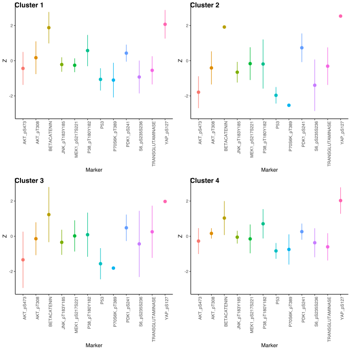
#fviz_gap_stat(tcga.hclust$gap_stat)
fviz_silhouette(tcga.hclust) +
theme_classic() +
theme(axis.text.x = element_text(angle = 90, hjust = 1)) cluster size ave.sil.width
1 1 82 0.18
2 2 21 0.00
3 3 20 0.12
4 4 21 0.14
5 5 33 0.00
6 6 7 -0.01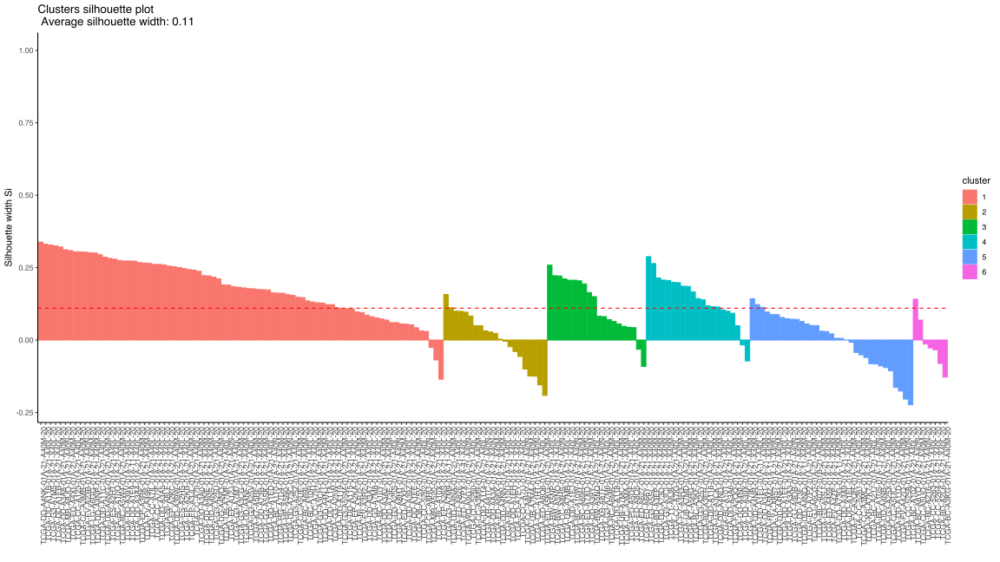
Plot in 2D PCA and UMAP
fviz_pca_ind(tcga.pca, geom = "point", col.ind = as.factor(tcga.hclust$cluster)) +
theme_classic()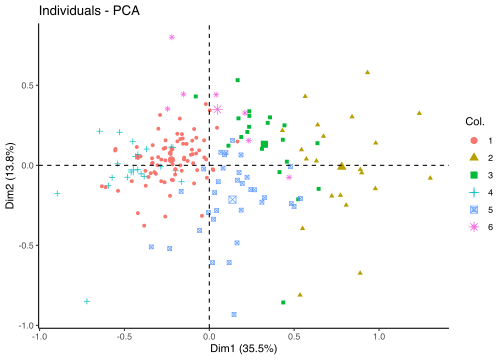
tcga.umap.clus <-
tcga.umap %>%
cbind(tcga.hclust$cluster) %>%
`colnames<-`(c("U1", "U2", "Cluster")) %>%
as_tibble() %>%
mutate_at("Cluster", as.factor)
ggplot(tcga.umap.clus, aes(x = U1, y = U2, color = Cluster)) +
geom_point() +
theme_classic()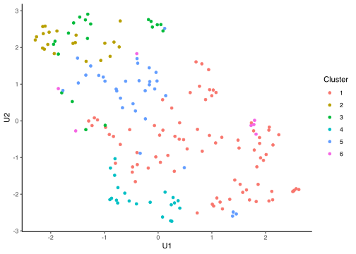
Expression profiles per cluster
tcga.clustered <- tcga.raw %>%
mutate(Cluster = as.factor(tcga.hclust$cluster)) %>%
pivot_longer(names_to = "Marker", values_to = "Z", -Cluster)
profiles <- seq_len(tcga.hclust$nbclust) %>% map(~
ggplot(
tcga.clustered %>% filter(Cluster == .x),
aes(x = Marker, y = Z, color = Marker)
) +
stat_summary(fun.data = mean_sdl, show.legend = FALSE) +
ylim(-3, 3) +
theme_classic() +
theme(axis.text.x = element_text(angle = 90, hjust = 1)))
plot_grid(plotlist = profiles, labels = paste("Cluster", seq_len(tcga.hclust$nbclust)))Warning: Removed 2 rows containing non-finite values (stat_summary).Warning: Removed 23 rows containing non-finite values (stat_summary).Warning: Removed 4 rows containing missing values (geom_segment).Warning: Removed 3 rows containing non-finite values (stat_summary).Warning: Removed 2 rows containing missing values (geom_segment).Warning: Removed 1 rows containing non-finite values (stat_summary).Warning: Removed 2 rows containing non-finite values (stat_summary).Warning: Removed 1 rows containing missing values (geom_segment).Warning: Removed 2 rows containing non-finite values (stat_summary).Warning: Removed 3 rows containing missing values (geom_segment).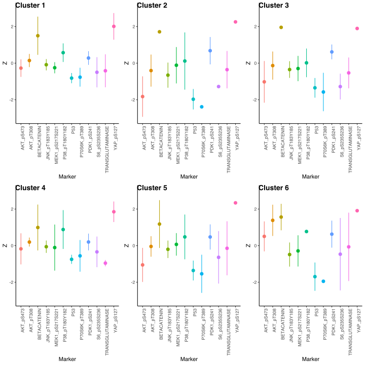
Differential expression analysis with limma.
design <- model.matrix(~0 + as.factor(tcga.hclust$cluster))
colnames(design) <- paste0("Cluster", seq_len(tcga.hclust$nbclust))
tcga.hclust.limma <- lmFit(t(tcga.raw), design = design)
tcga.hclust.eb <- eBayes(tcga.hclust.limma)
topTable(tcga.hclust.eb) Cluster1 Cluster2 Cluster3 Cluster4 Cluster5
P53 -0.81853456 -1.9728291 -1.34957363 -0.74815702 -1.35906356
YAP_pS127 2.02647828 3.0339519 2.09697253 1.93563539 2.41272242
P70S6K_pT389 -0.76752424 -2.4629435 -1.57688878 -0.55839403 -1.53985816
BETACATENIN 1.52521648 1.9768320 1.95573186 0.99194015 1.17977279
AKT_pS473 -0.27169830 -1.8269418 -1.02160833 -0.17498966 -1.05301660
PDK1_pS241 0.27956272 0.6802625 0.61401976 0.19940906 0.47342995
S6_pS235S236 -0.49873009 -1.6585656 -1.28105258 -0.34080340 -0.63892664
JNK_pT183Y185 -0.08655255 -0.6563026 -0.34991835 -0.05875654 -0.19999888
AKT_pT308 0.14372226 -0.4067163 -0.13355154 0.19638602 -0.04363602
P38_pT180Y182 0.57219116 0.1158460 0.01588039 0.88070826 0.47681020
Cluster6 AveExpr F P.Value adj.P.Val
P53 -1.6953849 -1.13026525 942.06423 3.292798e-134 3.951358e-133
YAP_pS127 2.0694465 2.20966288 571.85237 2.802263e-115 1.681358e-114
P70S6K_pT389 -2.1136125 -1.21485575 317.89567 1.172629e-93 4.690517e-93
BETACATENIN 1.5628928 1.50217041 171.13854 4.393233e-72 1.317970e-71
AKT_pS473 0.5060157 -0.63021426 142.44966 4.903972e-66 1.176953e-65
PDK1_pS241 0.6285290 0.40054637 83.80991 9.596449e-50 1.919290e-49
S6_pS235S236 -0.4666669 -0.72203758 55.91764 8.970505e-39 1.537801e-38
JNK_pT183Y185 -0.4861532 -0.21258126 52.37781 3.885665e-37 5.828498e-37
AKT_pT308 1.3833306 0.07032927 43.95006 6.024275e-33 8.032366e-33
P38_pT180Y182 0.7721723 0.48535253 35.13690 4.890317e-28 5.868380e-28tests.hclust <- decideTests(tcga.hclust.eb)
tests.hclust@.Data Cluster1 Cluster2 Cluster3 Cluster4 Cluster5 Cluster6
P53 -1 -1 -1 -1 -1 -1
AKT_pS473 -1 -1 -1 0 -1 1
AKT_pT308 1 -1 -1 1 0 1
BETACATENIN 1 1 1 1 1 1
JNK_pT183Y185 -1 -1 -1 0 -1 -1
MEK1_pS217S221 -1 0 -1 0 0 -1
P38_pT180Y182 1 0 0 1 1 1
P70S6K_pT389 -1 -1 -1 -1 -1 -1
PDK1_pS241 1 1 1 1 1 1
S6_pS235S236 -1 -1 -1 -1 -1 0
YAP_pS127 1 1 1 1 1 1
TRANSGLUTAMINASE -1 -1 -1 -1 0 0summary(tests.hclust) Cluster1 Cluster2 Cluster3 Cluster4 Cluster5 Cluster6
Down 7 7 8 4 5 4
NotSig 0 2 1 3 3 2
Up 5 3 3 5 4 6Similarity and graph based clustering
Calculate leiden clustering based on weighted shared nearest neighbor graph
tcga.knn <- knn.index(tcga.norm, 10)
jaccard.cuttoff <- 0.1
snn <- seq_len(nrow(tcga.knn) - 1) %>% map_dfr(\(id){
to <- seq(id + 1, nrow(tcga.knn))
jaccard <- to %>%
map_dbl(~ length(intersect(tcga.knn[id, ], tcga.knn[.x, ])) /
length(union(tcga.knn[id, ], tcga.knn[.x, ])))
tibble(from = id, to = to, weight = jaccard) %>% filter(jaccard >= jaccard.cuttoff)
})
leiden.clusters <- graph_from_data_frame(snn, directed = FALSE) %>% leiden()Plot in 2D PCA and UMAP
fviz_pca_ind(tcga.pca, geom = "point", col.ind = as.factor(leiden.clusters)) +
theme_classic()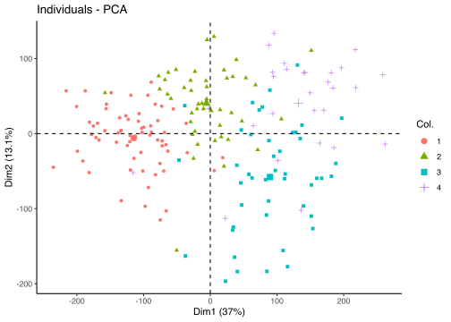
ggplot(tcga.umap.clus %>% mutate(Cluster = as.factor(leiden.clusters)), aes(x = U1, y = U2, color = Cluster, shape = Cluster)) +
geom_point() +
theme_classic()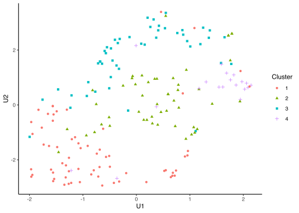
Expression profiles per cluster
tcga.clustered <- tcga.raw %>%
mutate(Cluster = as.factor(leiden.clusters)) %>%
pivot_longer(names_to = "Marker", values_to = "Z", -Cluster)
profiles <- seq_len(max(leiden.clusters)) %>% map(~
ggplot(
tcga.clustered %>% filter(Cluster == .x),
aes(x = Marker, y = Z, color = Marker)
) +
stat_summary(fun.data = mean_sdl, show.legend = FALSE) +
ylim(-3, 3) +
theme_classic() +
theme(axis.text.x = element_text(angle = 90, hjust = 1)))
plot_grid(plotlist = profiles, labels = paste("Cluster", seq_len(max(leiden.clusters))))Warning: Removed 26 rows containing non-finite values (stat_summary).Warning: Removed 3 rows containing missing values (geom_segment).Warning: Removed 3 rows containing non-finite values (stat_summary).Warning: Removed 2 rows containing non-finite values (stat_summary).
Warning: Removed 2 rows containing non-finite values (stat_summary).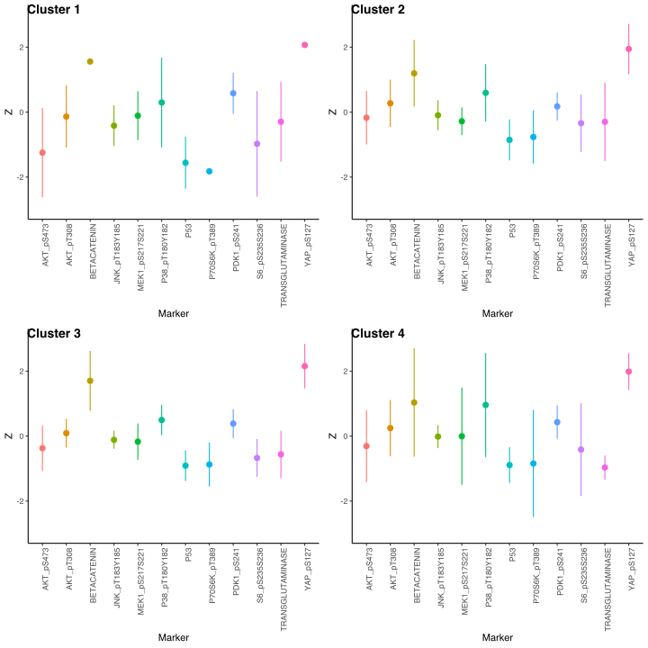
Differential expression analysis
design <- model.matrix(~0 + as.factor(leiden.clusters))
colnames(design) <- paste0("Cluster", seq_len(max(leiden.clusters)))
tcga.leiden.limma <- lmFit(t(tcga.raw), design = design)
tcga.leiden.eb <- eBayes(tcga.leiden.limma)
topTable(tcga.hclust.eb) Cluster1 Cluster2 Cluster3 Cluster4 Cluster5
P53 -0.81853456 -1.9728291 -1.34957363 -0.74815702 -1.35906356
YAP_pS127 2.02647828 3.0339519 2.09697253 1.93563539 2.41272242
P70S6K_pT389 -0.76752424 -2.4629435 -1.57688878 -0.55839403 -1.53985816
BETACATENIN 1.52521648 1.9768320 1.95573186 0.99194015 1.17977279
AKT_pS473 -0.27169830 -1.8269418 -1.02160833 -0.17498966 -1.05301660
PDK1_pS241 0.27956272 0.6802625 0.61401976 0.19940906 0.47342995
S6_pS235S236 -0.49873009 -1.6585656 -1.28105258 -0.34080340 -0.63892664
JNK_pT183Y185 -0.08655255 -0.6563026 -0.34991835 -0.05875654 -0.19999888
AKT_pT308 0.14372226 -0.4067163 -0.13355154 0.19638602 -0.04363602
P38_pT180Y182 0.57219116 0.1158460 0.01588039 0.88070826 0.47681020
Cluster6 AveExpr F P.Value adj.P.Val
P53 -1.6953849 -1.13026525 942.06423 3.292798e-134 3.951358e-133
YAP_pS127 2.0694465 2.20966288 571.85237 2.802263e-115 1.681358e-114
P70S6K_pT389 -2.1136125 -1.21485575 317.89567 1.172629e-93 4.690517e-93
BETACATENIN 1.5628928 1.50217041 171.13854 4.393233e-72 1.317970e-71
AKT_pS473 0.5060157 -0.63021426 142.44966 4.903972e-66 1.176953e-65
PDK1_pS241 0.6285290 0.40054637 83.80991 9.596449e-50 1.919290e-49
S6_pS235S236 -0.4666669 -0.72203758 55.91764 8.970505e-39 1.537801e-38
JNK_pT183Y185 -0.4861532 -0.21258126 52.37781 3.885665e-37 5.828498e-37
AKT_pT308 1.3833306 0.07032927 43.95006 6.024275e-33 8.032366e-33
P38_pT180Y182 0.7721723 0.48535253 35.13690 4.890317e-28 5.868380e-28tests.leiden <- decideTests(tcga.leiden.eb)
tests.leiden@.Data Cluster1 Cluster2 Cluster3 Cluster4
P53 -1 -1 -1 -1
AKT_pS473 -1 -1 -1 -1
AKT_pT308 -1 1 0 1
BETACATENIN 1 1 1 1
JNK_pT183Y185 -1 0 -1 -1
MEK1_pS217S221 -1 -1 -1 -1
P38_pT180Y182 1 1 1 1
P70S6K_pT389 -1 -1 -1 -1
PDK1_pS241 1 1 1 1
S6_pS235S236 -1 -1 -1 -1
YAP_pS127 1 1 1 1
TRANSGLUTAMINASE -1 -1 -1 0summary(tests.leiden) Cluster1 Cluster2 Cluster3 Cluster4
Down 8 6 7 6
NotSig 0 1 1 1
Up 4 5 4 5Consensus NMF
tcga.nmf.rank <- nmfEstimateRank(as.matrix(t(tcga.rank)), seq(2,10), nrun = 20, seed = 42)
plot(tcga.nmf.rank)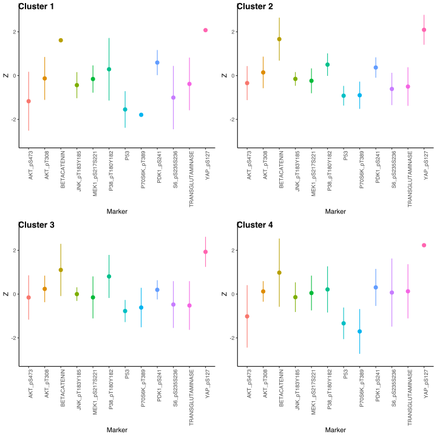
tcga.nmf <- nmf(as.matrix(t(tcga.rank)), 9, nrun = 20, seed = 42)Extract basis of NMF (signature of cluster)
basismap(tcga.nmf)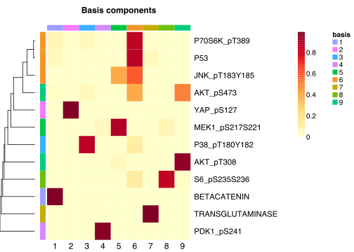
Extract coefficients of NMF (soft clustering of samples)
coefmap(tcga.nmf)
Check for signs of overfitting
consensusmap(tcga.nmf)
Assign clusters
nmf.clusters <- apply(tcga.nmf@fit@H, 2, which.max)Plot in 2D PCA and UMAP
fviz_pca_ind(tcga.pca, geom = "point", col.ind = as.factor(nmf.clusters)) +
theme_classic()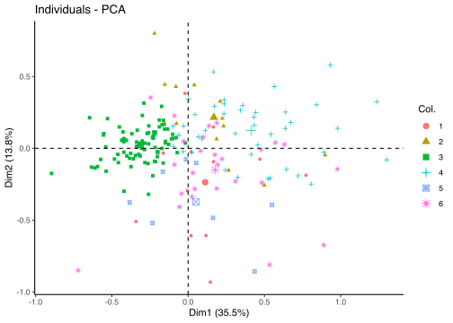
ggplot(tcga.umap.clus %>% mutate(Cluster = as.factor(nmf.clusters)), aes(x = U1, y = U2, color = Cluster)) +
geom_point() +
theme_classic()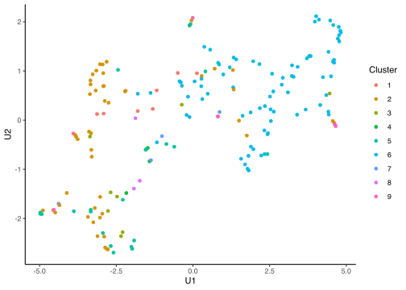
Differential expression analysis
design <- model.matrix(~0 + as.factor(nmf.clusters))
colnames(design) <- paste0("Cluster", seq_len(max(nmf.clusters)))
tcga.nmf.limma <- lmFit(t(tcga.raw), design = design)
tcga.nmf.eb <- eBayes(tcga.nmf.limma)
topTable(tcga.nmf.eb) Cluster1 Cluster2 Cluster3 Cluster4 Cluster5
YAP_pS127 2.3978952 2.61285314 2.3201659 3.1420813 2.2238593
P53 -1.3898400 -1.57136061 -1.5791340 -1.6966091 -1.6871837
P70S6K_pT389 -1.5005166 -1.88559093 -1.8771042 -1.9916481 -2.1545847
BETACATENIN 1.5219449 1.94169151 1.7378802 1.6725415 1.2337905
AKT_pS473 -1.0718449 -1.19110015 -1.1885023 -1.2880118 -1.6214364
PDK1_pS241 0.5337273 0.82307050 0.4057842 0.4516760 0.5444971
JNK_pT183Y185 -0.4204487 -0.53937835 -0.6318378 -0.5722916 -0.5929950
S6_pS235S236 -0.7697932 -1.75782250 -1.4877032 -1.2771461 0.1585755
TRANSGLUTAMINASE 0.4737129 -0.48797319 -0.7383488 -0.8834281 -0.4936744
P38_pT180Y182 0.1586131 -0.06291082 1.1912479 0.1479636 0.6498547
Cluster6 Cluster7 Cluster8 Cluster9 AveExpr
YAP_pS127 2.31851805 2.28435419 2.7963107 1.99277702 2.2096629
P53 -1.39871087 -1.41062633 -1.4182143 -0.76783304 -1.1302653
P70S6K_pT389 -1.65468628 -1.62197671 -1.7235497 -0.67217399 -1.2148558
BETACATENIN 1.68276282 1.10858642 2.5889554 1.45351116 1.5021704
AKT_pS473 0.02768572 -1.32191272 -1.0160392 -0.20523342 -0.6302143
PDK1_pS241 0.56397921 0.50942360 0.4634277 0.24215039 0.4005464
JNK_pT183Y185 -0.34306881 -0.08870123 -0.5234238 -0.06144003 -0.2125813
S6_pS235S236 -0.77727645 -0.77700868 -1.3703878 -0.50668050 -0.7220376
TRANSGLUTAMINASE -0.39685747 -0.28771420 -0.6573294 -0.54501927 -0.4221190
P38_pT180Y182 0.65381615 0.42702639 0.1811323 0.56558270 0.4853525
F P.Value adj.P.Val
YAP_pS127 317.40603 4.082167e-105 4.898601e-104
P53 313.60412 1.124174e-104 6.745043e-104
P70S6K_pT389 129.29254 1.677193e-73 6.708770e-73
BETACATENIN 112.27214 8.075566e-69 2.422670e-68
AKT_pS473 69.34864 1.122993e-53 2.695183e-53
PDK1_pS241 55.29196 4.315912e-47 8.631823e-47
JNK_pT183Y185 39.72208 3.261626e-38 5.591360e-38
S6_pS235S236 33.38019 6.258498e-34 9.387747e-34
TRANSGLUTAMINASE 21.94286 8.537095e-25 1.138279e-24
P38_pT180Y182 21.42125 2.524374e-24 3.029249e-24tests.nmf <- decideTests(tcga.nmf.eb)
tests.nmf@.Data Cluster1 Cluster2 Cluster3 Cluster4 Cluster5 Cluster6 Cluster7
P53 -1 -1 -1 -1 -1 -1 -1
AKT_pS473 -1 -1 -1 -1 -1 0 -1
AKT_pT308 0 -1 0 0 -1 1 -1
BETACATENIN 1 1 1 1 1 1 1
JNK_pT183Y185 -1 -1 -1 -1 -1 -1 -1
MEK1_pS217S221 -1 -1 -1 -1 0 -1 1
P38_pT180Y182 0 0 1 0 1 1 1
P70S6K_pT389 -1 -1 -1 -1 -1 -1 -1
PDK1_pS241 1 1 1 1 1 1 1
S6_pS235S236 -1 -1 -1 -1 0 -1 -1
YAP_pS127 1 1 1 1 1 1 1
TRANSGLUTAMINASE 1 -1 -1 -1 -1 -1 -1
Cluster8 Cluster9
P53 -1 -1
AKT_pS473 -1 -1
AKT_pT308 0 1
BETACATENIN 1 1
JNK_pT183Y185 -1 -1
MEK1_pS217S221 -1 -1
P38_pT180Y182 0 1
P70S6K_pT389 -1 -1
PDK1_pS241 1 1
S6_pS235S236 -1 -1
YAP_pS127 1 1
TRANSGLUTAMINASE -1 -1summary(tests.nmf) Cluster1 Cluster2 Cluster3 Cluster4 Cluster5 Cluster6 Cluster7 Cluster8
Down 6 8 7 7 6 6 7 7
NotSig 2 1 1 2 2 1 0 2
Up 4 3 4 3 4 5 5 3
Cluster9
Down 7
NotSig 0
Up 5
sessionInfo()R version 4.1.0 (2021-05-18)
Platform: x86_64-apple-darwin17.0 (64-bit)
Running under: macOS Big Sur 10.16
Matrix products: default
BLAS: /Library/Frameworks/R.framework/Versions/4.1/Resources/lib/libRblas.dylib
LAPACK: /Library/Frameworks/R.framework/Versions/4.1/Resources/lib/libRlapack.dylib
locale:
[1] en_US.UTF-8/en_US.UTF-8/en_US.UTF-8/C/en_US.UTF-8/en_US.UTF-8
attached base packages:
[1] parallel stats graphics grDevices utils datasets methods
[8] base
other attached packages:
[1] RColorBrewer_1.1-2 doParallel_1.0.16 iterators_1.0.13
[4] foreach_1.5.1 NMF_0.23.0 Biobase_2.52.0
[7] BiocGenerics_0.38.0 cluster_2.1.2 rngtools_1.5
[10] pkgmaker_0.32.2 registry_0.5-1 limma_3.48.1
[13] leiden_0.3.9 igraph_1.2.6 FNN_1.1.3
[16] cowplot_1.1.1 factoextra_1.0.7 uwot_0.1.10
[19] Matrix_1.3-4 skimr_2.1.3 forcats_0.5.1
[22] stringr_1.4.0 dplyr_1.0.7 purrr_0.3.4
[25] readr_2.0.0 tidyr_1.1.3 tibble_3.1.3
[28] ggplot2_3.3.5 tidyverse_1.3.1 workflowr_1.6.2
loaded via a namespace (and not attached):
[1] readxl_1.3.1 backports_1.2.1 Hmisc_4.5-0
[4] plyr_1.8.6 repr_1.1.3 splines_4.1.0
[7] gridBase_0.4-7 digest_0.6.27 htmltools_0.5.1.1
[10] viridis_0.6.1 fansi_0.5.0 checkmate_2.0.0
[13] magrittr_2.0.1 tzdb_0.1.2 openxlsx_4.2.4
[16] modelr_0.1.8 vroom_1.5.3 jpeg_0.1-9
[19] colorspace_2.0-2 rvest_1.0.1 ggrepel_0.9.1
[22] haven_2.4.2 xfun_0.24 crayon_1.4.1
[25] jsonlite_1.7.2 survival_3.2-11 glue_1.4.2
[28] gtable_0.3.0 car_3.0-11 abind_1.4-5
[31] scales_1.1.1 DBI_1.1.1 rstatix_0.7.0
[34] Rcpp_1.0.7 htmlTable_2.2.1 viridisLite_0.4.0
[37] xtable_1.8-4 reticulate_1.20 foreign_0.8-81
[40] bit_4.0.4 Formula_1.2-4 htmlwidgets_1.5.3
[43] httr_1.4.2 ellipsis_0.3.2 pkgconfig_2.0.3
[46] farver_2.1.0 nnet_7.3-16 sass_0.4.0
[49] dbplyr_2.1.1 utf8_1.2.2 tidyselect_1.1.1
[52] labeling_0.4.2 rlang_0.4.11 reshape2_1.4.4
[55] later_1.2.0 munsell_0.5.0 cellranger_1.1.0
[58] tools_4.1.0 cli_3.0.1 generics_0.1.0
[61] broom_0.7.9 evaluate_0.14 yaml_2.2.1
[64] knitr_1.33 bit64_4.0.5 fs_1.5.0
[67] zip_2.2.0 dendextend_1.15.1 whisker_0.4
[70] xml2_1.3.2 compiler_4.1.0 rstudioapi_0.13
[73] curl_4.3.2 png_0.1-7 ggsignif_0.6.2
[76] reprex_2.0.0 bslib_0.2.5.1 stringi_1.7.3
[79] highr_0.9 RSpectra_0.16-0 lattice_0.20-44
[82] vctrs_0.3.8 pillar_1.6.2 lifecycle_1.0.0
[85] jquerylib_0.1.4 data.table_1.14.0 httpuv_1.6.1
[88] R6_2.5.0 latticeExtra_0.6-29 promises_1.2.0.1
[91] gridExtra_2.3 rio_0.5.27 codetools_0.2-18
[94] assertthat_0.2.1 rprojroot_2.0.2 withr_2.4.2
[97] hms_1.1.0 grid_4.1.0 rpart_4.1-15
[100] rmarkdown_2.9 carData_3.0-4 git2r_0.28.0
[103] ggpubr_0.4.0 lubridate_1.7.10 base64enc_0.1-3